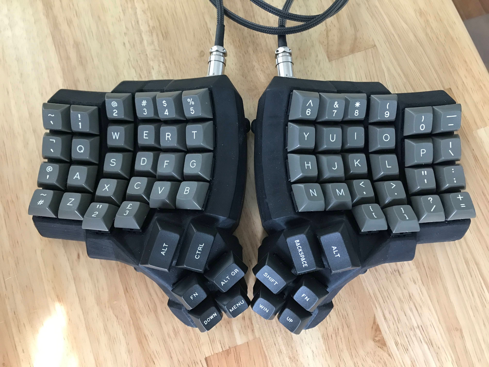
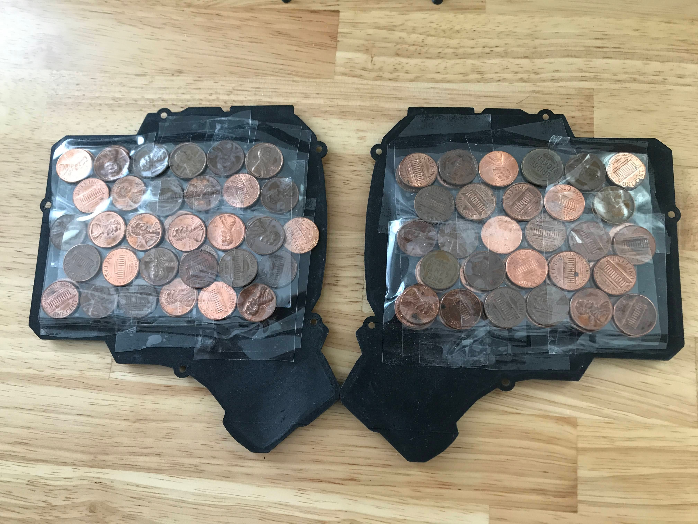
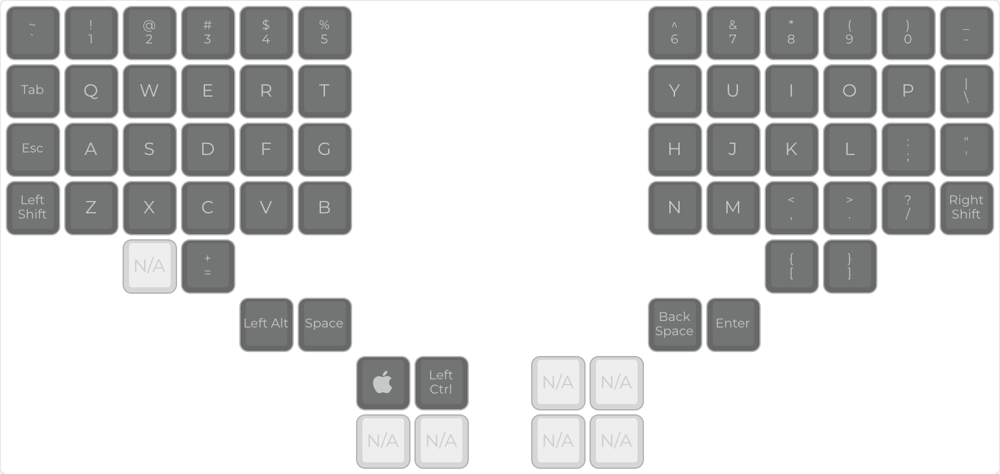
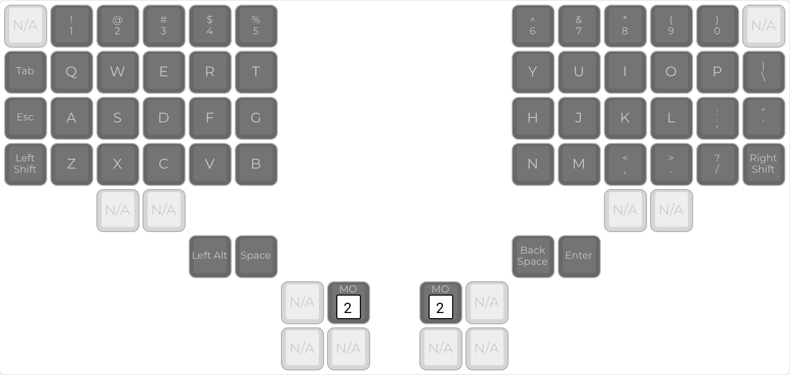
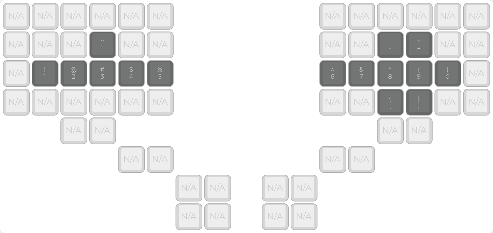
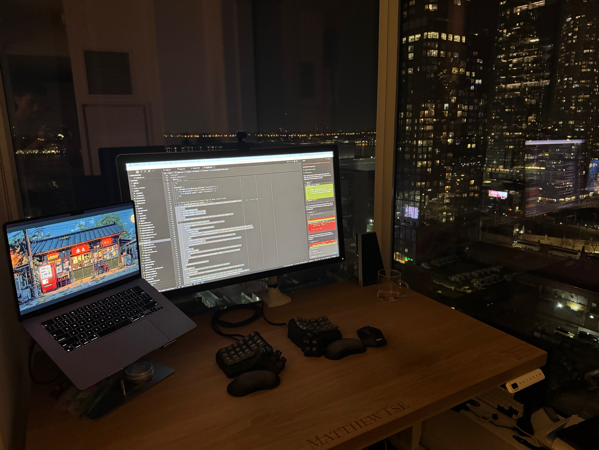

Dactyl Manuform IV — Post-Build Tweaking
Now that the keyboard is effectively hardware-complete, it's time to test it out and find a keymap/configuration to my liking.
Keycaps

The finished board in the DSA Dolch set, with sculpted 1.25u caps on the top thumb keys.
First, an aside on keycaps. When I first finished my dactyl enough to start testing keys with the computer, I cannibalized the OEM profile keycaps from my WASD keyboard. Sculpted keycaps like the OEM profile are okay for the dactyl. It feels relatively nice, and the sculpting doesn't make the surface feel ultra-irregular or anything. However, DSA keycaps are the ideal for a dactyl, for two reasons:
- Sculpted keycaps are sculpted to create a seemingly curved surface out of a flat surve. So applying a double curve (keycaps and dactyl shape) results in a non-uniform curve. DSA keycaps give you this perfect curve uniformity that is oh-so-nice. With that said, DSA keycap sets often come in 1u width for all keys to fit a column-staggered layout, which means the thumb cluster buttons are small and flat. The best thumb cluster keycaps I've found for dactyl manuforms is actually sculpted 1.25u keycaps, which give you a larger surface area and slant towards your thumbs. So right now the ideal keycaps for me are mostly DSA keycaps with OEM 1.25u keycaps for the top three thumb cluster buttons (1.25u won't fit on the other thumb cluster buttons).
- DSA allows you to move the keycaps up and down rows without messing things up, since they're all identically molded.
Adding Weight (Pennies!)
One of the first things I noticed once I started using the keyboard as a daily driver is that it slipped around on the desk way too easily despite the rubber feet from home depot I adhered to the bottom. Initially, I blamed the rubber feet, thinking they weren't "rubbery" enough. I was about to order some different rubber feet, and I also considered a whole neoprene mat that I would cut and glue to to the bottom. But I came up with a better idea. Frictional force is proportional to the coefficient of friction and the normal force. So I realized that this split keyboard was way lighter than my previous mechanical keyboards. For one, it is split in half, which means each half only pushes down with half as much weight as a normal keyboard. Furthermore, because it is handwired without a full PCB nad without any sort of metal backplate, it is incredibly light. I tried putting a few phones on top of the keyboard to see if it stayed in place better, and it made a dramatic difference. So I thought about things I could use for ballast. I initially thought of getting some stones from my backyard but came up with a great idea to use some pennies lying around. Metal provides a great mass to volume ratio, and pennies are just about the most cost efficient ballast you can buy :) So I grabbed a bunch of pennies from the coin jar and taped them to the bottom of the case using packaging tape. The pennies really add a solid heft that make the keyboard halves feel much sturdier, and they make the keyboard much more stable on the desk.

Pennies taped to the bottom of each half—cheap, dense ballast.
Finding The Right Keymap
Ergonomic column-staggered keyboards almost always drastically reduce the number of keys they provide for you. You're expected to use the qmk firmware and layer functionality to provide all the keys you need while staying closer to the home row. That's pretty much the whole point of ergonomic keyboards, reducing hand/finger strain by reducing travel distance. With that said, if you're primarily a text typer you'll find it pretty easy to abandon all the weird modifier keys and symbols. But as a heavy keyboard-shortcut user and a programmer, I have a lot of need for most of the obscure keyboard symbols and modifiers, which made it quite a challenge to find a suitable keymap.
Wrist Rests
The Dactyl Manuform sits on average about 2 inches above the surface of your desk. If you rest your wrists directly on the desk surface, you'll suffer from relatively dramatic wrist pronation, where your wrist bends sharply instead of laying in line with the angle of your forearm. Many Dactyl Manuform case designs include a built in case of some sort, but I thought the designs looked tacky. At first I just placed some socks underneath my wrists, which already made a big difference in comfort. Eventually I found these memory foam wrist rests on Amazon—they come as a 2-pack, which conveniently suits a split keyboard—and they've been a much nicer permanent solution.
Version 0.1
The first version of my keymap was to keep as much the same as possible. Which meant:
- leaving the shift key in the same spot
- moving the return and backspace keys to the right thumb cluster, since they don't have a spot on the keyboard anymore
- moving the left ctrl and meta(windows) key to the left thumb cluster, since there's no room on the bottom left corner
- moving the brackets to the two extra keys that dactyl provides underneath the period and comma keys.
- moving the plus sign to the extra key underneath the c
- having a layer that replaced the number keys with F keys. I use the F keys to switch between desktops, i.e. quickly switch from VS Code, to the Terminal, to Chrome, etc.

The initial layer-less layout, made in the QMK Configurator.
This was okay, but it had a big issue. Having control as a thumb cluster button really sucked. My muscle memory really likes a pinkie to be pressing the ctrl as I navigate around. Often times when I was trying to do a ctrl shortcut I would accidentally hold down the space key and mess everything up. I had a similar issue holding down a layer key and a number key to jump to a different desktop. It's just bad to jump to modifier keys around the space bar.
Version 0.2
Okay, so I guess we need to move the ctrl and windows key back to the bottom left corner. How about moving the
shift key up by one? The caps lock key isn't really used. And qmk has this mod-tap feature which allows a key to function as a key when pressed,
and a modifier when held. So I could get the quotation key to function as my right shift. This seems like a good
idea, however over a day or two of testing, I ran into an issue. With the stock mod-tap settings, I was having an
issue where typing a quoted string. Instead of typing 'hello', it would type Hello',
because I was typing too quickly, which meant I didn't fully release the ' before typing the
h, which resulted in QMK thinking I wanted capitalization. QMK has a feature called Ignore Mod Tap Interrupt which basically
requires both the ' and h to be held fully before registering as a shifted
h. This sounds good, but once enabled, it makes it really hard to actually capitalize letters.
Usually I hold shift, and tap the letter key really quickly, without holding it down. So the mod-tap key got me
stuck between a rock and a hard place. Both failure modes were incredibly annoying.
Version 0.3
So the next thing I tried was assymetrical shift keys. On the left side, I would have the shift key where the caps lock normally goes (row 3), and on the right side I would have the shift key where it normally is, (row 2). This would get me left side control keys and a non mod-tapped shift key on the right side. Unfortunately, it was way too annoying to have the shift key be different on the two hands. I would constantly get mixed up which key to actually press for shift.
Version 0.4
I had a bit of an epiphany late at night while pondering my keymap. What if I swapped semi-colon and quotations?
It's a well known defficiency that querty puts the little used semi-colon on the home row. This would make my
home-row right pinky on a much more useful key, and keep shift uniformly on row 3 in both sides, and wouldn't run
into right side mod-tap shift issues since the semi colon key is little used. So I don't need to enable
Ignore Mod Tap Interrupt since it would be very rare for me to type something like
;a. This would only require me to swap the muscle memory of quote and semi-colon, which wasn't that
bad.
Version 0.5
I also wanted some easier way to access the F keys, since those are often used for switching
between desktops. I found the Tap Dance
feature, which does one key when tapped, and another key when double tapped. I applied this to the 1
through 5 keys to map to their F key equivalents. This worked quite well. Double tapping
to go to a new desktop was way less error prone than fishing for a thumb modifier and then stretching to the
number row. The only disadvantage is that this makes the number keys sort of sluggish. Basically when you tap
1, it doesn't register immediately on key down, but rather registers 200ms after key up, which is how
the keyboard determines if this is a single tap, or might be a double tap. This seems okay. I added a gaming layer
that disables all these tap dance and mod tap features for maximum responsiveness.
Version 1.0
And with all these iterations, we come to the version I consider complete—for now. I added a numbers/symbols layer designed to keep my hands totally on/near the home row. No jumping to the high up number keys, and no jumping down to the keys way underneath the middle and ring finger. It was quite nice and intuitive to map the number keys to the home row, and I then put brackets, hyphen, and equals keys above and below the home row on the right half. This really unlocked the keyboard. Yes, the column-staggered concave keywell is really nice for typing text, but this layer lets me type programming symbols very quickly and accurately as well.

The final base layer, with the MO(2) layer-switch keys on the inner thumbs.

The numbers/symbols layer—numbers on the home row, brackets/hyphen/equals on the right.

The finished keyboard, right at home on my desk.